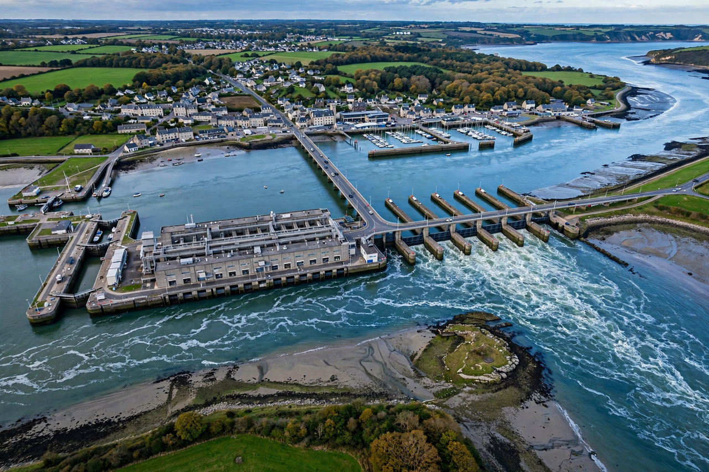

Tidal power

Tidal power (tidal energy) generates electricity from the rise and fall of ocean tides. Unlike most other renewables it is driven by the Moon's gravity, making it perfectly predictable years in advance, though it pulses with the tidal cycle rather than following demand. See Renewable energy.
Only a handful of large tidal power stations exist, because few sites combine a big tidal range with suitable geography, and construction costs are high.
Barrages and turbines
Tidal barrages dam an estuary or bay and generate as water flows in and out through turbines. The pioneers are La Rance in France (240 MW, operating since 1966) and Sihwa Lake in South Korea (254 MW, since 2011), still the two largest. Annapolis Royal in Canada and smaller schemes in China and Russia complete most of the list.
A newer approach places free-standing tidal-stream turbines on the seabed in fast tidal channels — the Pentland Firth in Scotland is the leading test ground — avoiding barrages' costs and environmental disruption, though the technology remains young and expensive.
Potential and limits
Global tidal resources are modest compared with wind and solar, and the best sites are geographically concentrated. Environmental concerns include altered sediment transport and effects on fish and shorebirds in dammed estuaries. Tidal power's value lies in its reliability and predictability within a low-carbon mix, rather than in its total scale.
See also: Renewable energy · Hydroelectricity · Ocean · Moon · Wind power